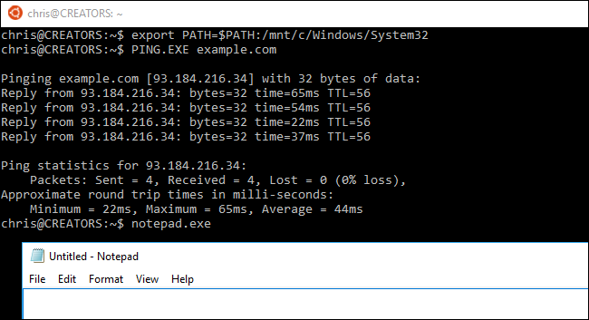

How-To Geek
How to Run Windows Programs from Windows 10’s Bash Shell
In the Creators Update, Windows 10’s Bash shell now allows you to run Windows binaries and standard Command Prompt commands, right from Bash. You can run both Linux and Windows programs from the same Bash shell, or even incorporate Windows commands into a Bash script.
This only works in the Creators Update—you can’t do this on the current Anniversary Update. So if you want to do this, you’ll need to be running the Insider Preview builds until the Creator’s Update is released to everyone.
What You Need to Know

Here are some basic details you need to know about this feature:
- User Account: Programs launched from the Bash shell will run as if they were launched by the current Windows user account.
- Permissions: These programs will have the same permissions as the Bash.exe process. So, if you want these commands to have Administrator access, you’ll need to run the Bash shell as Administrator.
- Working Directory: Windows programs share the same “working directory” as the Bash shell. So, if you run a command that lists the contents of the current directory, it will list the contents of the current working directory in the Bash shell. Use the
cdcommand to change working directories.
With that in mind, let’s take a look at how to run a program.
How to Run a Windows Program
To run a Windows program, enter the path to the program’s .exe file in teh Bash shell. Remember that your Windows C: drive is available at /mnt/c in Bash. The Bash environment is also case-sensitive, so you have to specify the correct capitalization.
Let’s say you wanted to launch the Ping utility located at C:\Windows\System32\PING.EXE. You’d run the following command:
/mnt/c/Windows/System32/PING.EXE
The following command wouldn’t work, because Bash is case-sensitive:
/mnt/c/windows/system32/ping.exe
This is a bit more complicated if the path contains complex characters like spaces and brackets, like the Program Files folders. You have to “escape” spaces, brackets, and other complex characters by prefixing them with a “\” character.
For example, let’s say you wanted to run the Internet Explorer program located at C:\Program Files (x86)\Internet Explorer\iexplore.exe. You’d have to run the following command in Bash:
/mnt/c/Program\ Files\ \(x86\)/Internet\ Explorer/iexplore.exe
Note the “\” before the space and bracket characters. These characters must be “escaped” or Bash won’t realize the characters are part of a file path.
How to Pass an Argument to a Command
The Bash shell passes arguments directly to the commands you execute.
For example, if you wanted to ping example.com, you’d run:
/mnt/c/Windows/System32/PING.EXE example.com
Or, if you wanted to open the Windows hosts file in Notepad, you’d run:
/mnt/c/Windows/System32/notepad.exe "C:\Windows\System32\drivers\etc\hosts"
You use the standard Windows file path when passing a file path directly to a Windows program. That’s because Bash passes the argument directly. Notepad.exe and other Windows programs expect a Windows file path.
How to Run a Built-in Command
Some Windows commands aren’t .exe files, but are built into the Command Prompt itself. For example, this includes the dir command you might normally run in a Command Prompt. To run such a command, you need to run the cmd.exe binary associated with the Command Prompt and pass it the command as an argument with /C, like so:
/mnt/c/Windows/System32/cmd.exe /C command
For example, to run the dir command built into the Command Prompt, you’d run the following command:
/mnt/c/Windows/System32/cmd.exe /C dir
How to Add Directories to the Path
The Windows Services for Linux environment treats Windows executables similar to the way it treats Linux binaries. This means that you can add a directory containing .exe files to the path and then execute those .exe files directly. For example, to add the System32 directory to your path, you’d run:
export PATH=$PATH:/mnt/c/Windows/System32
You could then run Windows .exe files located in the System32 folder directly, like so:
PING.exe example.com
notepad.exe
cmd.exe /C dir

How to Pipe the Output of One Command to Another
The output of a Windows command can be piped to a Linux command, and vice versa. For example, you can use the ipconfig.exe -all command to list details about your network interfaces and pipe it to the Linux grep command to search the output. For example, to list all information about your connection and search for sections matching “IPv4 Address”, you’d run:
/mnt/c/Windows/System32/ipconfig.exe -all | grep "IPv4 Address"
That’s the basic process. These commands will also work when incorporated into a Bash script, so you can write a Bash script that incorporates both Windows commands and Linux utilities. If it runs in the Bash shell, it will work in a Bash script.
And, if you want to go the other way, you can use the “bash -c” command to run Bash commands from the standard Windows Command Prompt.
![]()

![]()
![]()
![]()
![]()
![]()
![]()
![]()
![]()
![]()